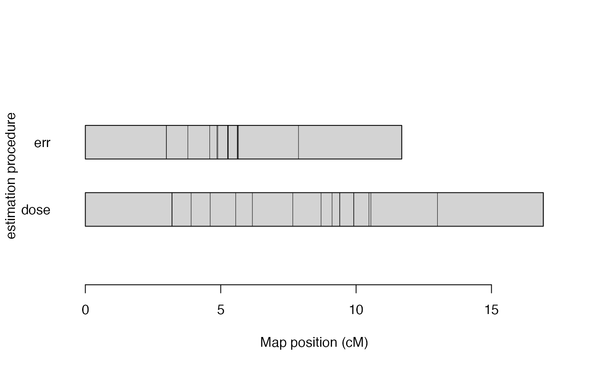

R/reest_map_error.R
est_full_hmm_with_global_error.RdThis function considers a global error when re-estimating a genetic map using Hidden Markov models. Since this function uses the whole transition space in the HMM, its computation can take a while, especially for hexaploid maps.
est_full_hmm_with_global_error(
input.map,
error = NULL,
tol = 0.001,
restricted = TRUE,
th.prob = 0.95,
verbose = FALSE
)an object of class mappoly.map
the assumed global error rate (default = NULL)
the desired accuracy (default = 10e-04)
if TRUE (default), restricts the prior to the
possible classes under Mendelian, non double-reduced segregation
given dosage of the parents
the threshold for using global error or genotype probability distribution if present in the dataset (default = 0.95)
if TRUE, current progress is shown; if
FALSE (default), no output is produced
A list of class mappoly.map with two elements:
i) info: a list containing information about the map, regardless of the linkage phase configuration:
the ploidy level
number of markers
a vector containing the (ordered) indices of markers in the map, according to the input file
the names of markers in the map
a vector containing the dosage in parent 1 for all markers in the map
a vector containing the dosage in parent 2 for all markers in the map
a vector indicating the sequence (usually chromosome) each marker belongs
as informed in the input file. If not available,
chrom = NULL
physical position (usually in megabase) of the markers into the sequence
reference base used for each marker (i.e. A, T, C, G). If not available,
seq.ref = NULL
alternative base used for each marker (i.e. A, T, C, G). If not available,
seq.ref = NULL
a vector containing p-values of the chi-squared test of Mendelian segregation for all markers in the map
name of the dataset of class mappoly.data
the LOD threshold used to define the linkage phase configurations to test
ii) a list of maps with possible linkage phase configuration. Each map in the list is also a list containing
a vector containing the (ordered) indices of markers in the map, according to the input file
a vector of size (n.mrk - 1) containing a sequence of recombination
fraction between the adjacent markers in the map
linkage phase configuration for all markers in both parents
the hmm-based multipoint likelihood
Mollinari, M., and Garcia, A. A. F. (2019) Linkage analysis and haplotype phasing in experimental autopolyploid populations with high ploidy level using hidden Markov models, _G3: Genes, Genomes, Genetics_. doi:10.1534/g3.119.400378
submap <- get_submap(solcap.dose.map[[1]], mrk.pos = 1:20, verbose = FALSE)
err.submap <- est_full_hmm_with_global_error(submap,
error = 0.01,
tol = 10e-4,
verbose = TRUE)
#>
#> ----------------------------------------------
#> INFO: running HMM using full transition space:
#> this operation may take a while.
#> -----------------------------------------------
#> Ploidy level:4
#> Number of individuals:160
#>
#> 0.030 0.000 0.000 0.007 0.007 0.005 0.002 0.006 0.003 0.001 0.002 0.000 0.003 0.000 0.003 0.001 0.023 0.037 0.000
#> 0.030 0.000 0.000 0.007 0.007 0.003 0.001 0.004 0.001 0.000 0.001 0.000 0.003 0.000 0.001 0.000 0.023 0.037 0.000
#> 0.029 0.000 0.000 0.008 0.008 0.003 0.001 0.003 0.000 0.000 0.001 0.000 0.003 0.000 0.001 0.000 0.022 0.037 0.000
#> 0.029 0.000 0.000 0.008 0.008 0.003 0.001 0.003 0.000 0.000 0.001 0.000 0.003 0.000 0.001 0.000 0.022 0.037 0.000
#> 0.029 0.000 0.000 0.008 0.008 0.003 0.001 0.003 0.000 0.000 0.000 0.000 0.003 0.000 0.000 0.000 0.022 0.037 0.000
#> 0.029 0.000 0.000 0.008 0.008 0.003 0.000 0.004 0.000 0.000 0.000 0.000 0.003 0.000 0.000 0.000 0.022 0.037 0.000
#> 0.029 0.000 0.000 0.008 0.008 0.003 0.000 0.004 0.000 0.000 0.000 0.000 0.003 0.000 0.000 0.000 0.022 0.037 0.000
err.submap
#> This is an object of class 'mappoly.map'
#> Ploidy level: 4
#> No. individuals: 160
#> No. markers: 20
#> No. linkage phases: 1
#>
#> ---------------------------------------------
#> Number of linkage phase configurations: 1
#> ---------------------------------------------
#> Linkage phase configuration: 1
#> map length: 11.69
#> log-likelihood: -377
#> LOD: 0
#> ~~~~~~~~~~~~~~~~~~
plot_map_list(list(dose = submap, err = err.submap),
title = "estimation procedure")
